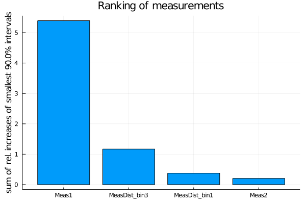
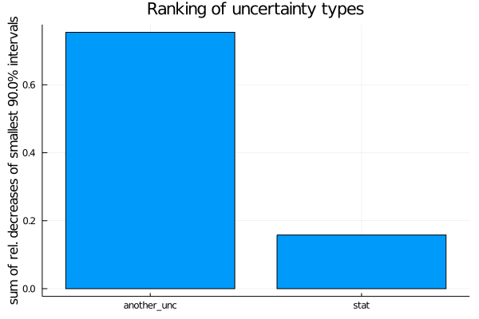

EFTfitter.jl - Advanced Tutorial
Table of contents:
Vector of functions for a MeasurementDistribution
When using distributions of measurements, a vector of functions with the predictions for the observable needs to be passed containing a function for each of the bins which have only the model parameters as their argument. Defining a separate function for each bin can, however, become tedious for a large number of bins, especially since typically the bins of a distribution have a similar functional dependence on the model parameters and only differ in some coefficients. In such cases, it is possible to use Julia's metaprogramming features to create the vector of functions. The distribution in our basic tutorial has been defined by implementing three functions that all call the same function myfunc but with different values for the coefficients The same result can also be achieved like this:
function get_coeffs(i) # return the coefficients for bin i
coeffs = [[2.2, 5.5, 6.6], [2.2, 5.5, 6.6], [2.2, 5.5, 6.6]]
return coeffs[i]
end
function my_dist_func(params, i)
coeffs = get_coeffs(i)
return coeffs[1] * params.C1 + coeffs[2] * params.C1 * params.C2+ coeffs[3] * params.C2
endcreate an array of Functions with names diff_xsec_binX:
diff_xsec=Function[]
for i in 1:3
@eval begin
function $(Symbol("diff_xsec_bin$i"))(params)
return my_dist_func(params, $i)
end
push!(diff_xsec, $(Symbol("diff_xsec_bin$i")))
end
endUsing covariance matrices
Information about the uncertainties of measurements need to be provided to EFTfitter.jl in terms of the uncertainty values and corresponding correlation matrices. If you have these information in terms of covariance matrices, you need to convert it to correlation matrices and uncertainty values before. The function cov_to_cor can be used for this:
cov_syst = [3.24 0.81 0.378 0.324 0.468;
0.81 0.81 0.126 0.162 0.234;
0.378 0.126 0.49 0.126 0.182;
0.324 0.162 0.126 0.81 0.234;
0.468 0.234 0.182 0.234 1.69]
cor_syst, unc_syst = cov_to_cor(cov_syst)measurements = (
Meas1 = Measurement(xsec1, 21.6,
uncertainties = (stat=0.8, syst=unc_syst[1], another_unc=2.3)),
Meas2 = Measurement(Observable(xsec2, min=0), 1.9,
uncertainties = (stat=0.6, syst=unc_syst[2], another_unc=1.1), active=true),
MeasDist = MeasurementDistribution(diff_xsec, [1.9, 2.93, 4.4],
uncertainties = (stat = [0.7, 1.1, 1.2], syst= unc_syst[3:5], another_unc = [1.0, 1.2, 1.9]),
active=[true, false, true]),
)Nuisance Correlations
When performing an analysis with unknown correlation coefficients, it is possible to treat them as nuisance parameters in the fit. For this, we define a further NamedTuple consisting of NuisanceCorrelation objects:
nuisance_correlations = (
ρ1 = NuisanceCorrelation(:syst, :Meas1, :Meas2, -1..1),
ρ2 = NuisanceCorrelation(:syst, :MeasDist_bin1, :MeasDist_bin3, truncated(Normal(0.5, 0.1), -1, 1)),
)In the NuisanceCorrelation object we specify the name of the uncertainty type, the names of the two measurements we want to correlate using the nuisance correlations and a prior for the nuisance parameter. Note that the nuisance parameters should only be varied in the interval (-1, 1) as they represent correlation coefficients. For ρ1 we choose a flat prior between -1 and 1. For ρ2 we have some expectations and formulate them using a Gaussian prior with μ=0.5 and σ=0.1. However, to ensure that ρ2 is only varied in the allowed region of (-1, 1), we truncate the normal distribution accordingly.
We need to modify the definition of the EFTfitterModel by also passing the nuisance_correlations:
model = EFTfitterModel(parameters, measurements, correlations, nuisance_correlations)
savefig(p, "plot.pdf")
When using nuisance correlations, it may happen that the fit does not converge anymore. This happens mainly when the correlation values are close to -1 or +1. In such a case, you can try to reduce the allowed ranges in the priors for the Nuisance correlations to investigate at which values this happens.
Ranking of measurements and uncertainties
With the rank_measurements and rank_uncertainties functions, the influence of the individual measurements or uncertainty types on the result of a fit can be estimated. For the ranking, each active measurement (respectively uncertainty type) is deactivated at a time and the fit is repeated. The results of the fits with a deactivated measurement (or uncertainty type) are then compared to the fit result with all measurements (uncertainty types) activated. A ranking is calculated based on a ranking criterion calculated from the posterior distributions of these fits.
The default ranking criterion is the relative increase of the total width of the smallest interval containing 90% of the posterior probability when deactivating a measurement. For models with more than one parameter, the sum of the relative increases of all one-dimensional smallest intervals is used, i.e. SumOfSmallestIntervals(p=0.9, bins=200).
measurement_ranking = EFTfitter.rank_measurements(model)The sampling algorithm to be used can be passed with the keyword sampling_algorithm. By default, BAT.MCMCSampling() is used, i.e. Metropolis-Hastings with 4 chains and 100000 steps.
plot(measurement_ranking, title = "Ranking of measurements")
For ranking the uncertainty types, the relative decrease is used.
uncertainty_ranking = EFTfitter.rank_uncertainties(model,
criterion = SumOfSmallestIntervals(p=0.9, bins=200),
sampling_algorithm = SobolSampler(nsamples = 10^5), order = :values)
plot(uncertainty_ranking, title = "Ranking of uncertainty types") Please see the ranking documentation for further ranking criteria and keyword arguments.
This page was generated using Literate.jl.